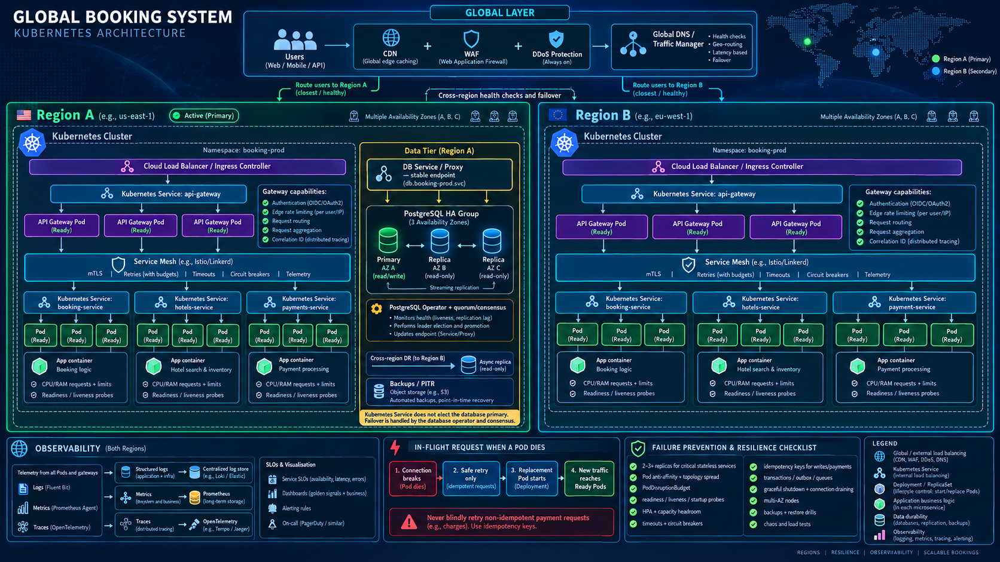

Pods
One running instance of a microservice, containing its application container.
I built a Booking-style Kubernetes lab to understand who runs applications, who routes traffic, what happens during failure, and how production releases stay safe.
One running instance of a microservice, containing its application container.
Maintain replica count, replace failed Pods, and roll out new versions.
Provide stable discovery and balance traffic across Ready Pods.
Authentication, coarse rate limiting, routing, request aggregation and correlation IDs.
Authorization, domain limits, validation, structured logs, metrics and traces.
Each region has an independent cluster. Inside the namespace, Services route to replicated Gateway, Booking, Hotels and Payment Pods. PostgreSQL spans availability zones and replicates to a disaster-recovery region.

An in-flight connection cannot magically move to another Pod.
Deployment creates a replacement; Service sends new traffic only to Ready Pods.
Timeouts, idempotency keys, transactions and circuit breakers prevent duplicate writes.
Non-sensitive URLs, log level and static configuration. Connected only to explicitly selected workloads.
Short-lived credentials delivered to authorized service accounts. Never commit real keys to Git.
Metrics decide whether v2 is promoted or rolled back.
Enable by user, cohort, region or percentage without choosing individual Pods and without a new deployment.
Centralized telemetry, dashboards, SLOs and actionable alerts.
Replica count follows traffic, latency targets, Pod capacity and failure headroom.
WAF, rate limits, RBAC, network policy, secret rotation and image scanning.
Next: add PostgreSQL, Ingress, Helm, autoscaling, observability and CI/CD to the local Booking lab.